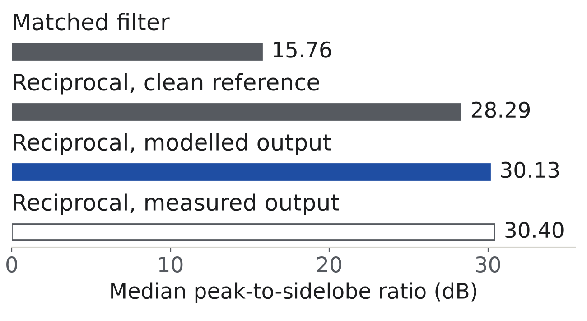

If you travel roughly 200 kilometres south of the Arctic Circle, you hit Oulu, Finland—a city famous for two things: the Air Guitar World Championships (held every summer since 1996, with straight-faced international judges scoring people playing guitars that do not exist) and the 6G Flagship at the University of Oulu's Centre for Wireless Communications. Between air guitars and sub-terahertz radio waves, Oulu is a town unusually comfortable taking invisible things very seriously.
In October 2026, that habit put me on a plane to London alongside my colleague Aprotim Paul for the final of the EuRAD Student Design Competition at European Microwave Week (EuMW 2026). Together with our teammate Dimuthu Lesthuruge—a final-year doctoral candidate at CWC, we flew out to present—we had spent weeks wrestling with real measured data from a gallium nitride (GaN) power amplifier.
Spoiler up front: we were finalists, and we did not take home the trophy. A sharp team from Brandenburgische Technische Universität (BTU) Cottbus-Senftenberg won with their receiver architecture, RAGE-AF. Even so, between surviving the chaotic-until-it-was-normal commute into ExCeL London, getting humbled by real RF measurement data, and decompressing afterwards at Bletchley Park, it was the week radio engineering stopped feeling like a set of university problem sheets and started feeling real.
The competition—officially "The GaN Challenge: mastering OFDM radar under real PA nonlinearities", sponsored by NI and Emerson and backed by researchers from Vrije Universiteit Brussel, Cranfield University, the University of Strathclyde, and Emerson—handed us a very modern headache. Future wireless systems increasingly want one wideband OFDM waveform to pull double duty: carry data to a phone while simultaneously acting as a radar pulse bouncing off objects in the environment (Integrated Sensing and Communication, or ISAC).
In textbook radar, finding targets is straightforward. You transmit a known signal x(t), wait for echoes to return after round-trip delays τk, and slide a copy of your transmitted waveform across the recording. That sliding correlation is the matched filter. Wherever your template lines up with an echo, the correlation spikes. The spike's delay gives you distance, and mathematically, matched filtering maximizes signal-to-noise ratio (SNR).
There are two catches—one from the math, and one from the hardware.
Catch 1: Every peak has a skirt. Correlate a finite OFDM symbol with itself and you never get a razor-thin impulse. You get one tall central peak (the mainlobe) surrounded by ripples called range sidelobes. With one target, nobody cares. Put a strong reflector next to a weak one, though, and the strong target's sidelobes swallow the weak target whole. As we put it on stage in London, it is like trying to hear the person standing in front of you at the EuMW reception while someone two metres away explains GaN thermal management at full volume. Nothing in the hardware even has to be broken for target four to vanish.
Catch 2: The GaN amplifier edits your message. OFDM waveforms are built by summing hundreds or thousands of subcarriers, which gives them spiky amplitudes—high peak-to-average power ratio (PAPR). Push those spikes through a real gallium nitride power amplifier and the hardware fights back: it compresses the peaks (AM/AM distortion), twists the phase as amplitude changes (AM/PM distortion), and remembers what happened nanoseconds earlier through its bias networks and matching circuits (memory effects). The antenna does not radiate your clean digital x(t); it radiates a bent x'(t). Every echo coming back from the channel is an echo of x', while a naive receiver keeps searching for x.
Our receiver pipeline tackled those two problems in order—entirely in receive-side DSP, without touching the transmitter.
A matched filter uses an exact copy of the transmit waveform, maximizing peak SNR at the expense of loud sidelobes. A constrained mismatched filter (MMF) deliberately trades away a fraction of peak gain to crush the sidelobes around it. Think of it as pinning the peak and squashing the rest: we design a receive filter h of length L that forces unit gain at zero lag while minimizing total energy across the sidelobe lag set S (outside a small mainlobe guard region):
minimize ∑_{k ∈ S} |(x * h)[k]|² + λ‖h‖₂²
subject to (x * h)[0] = 1Forming the shifted sidelobe matrix Q and the regularized Gram matrix R = QᴴQ + λI (with ridge parameter λ > 0 keeping the inversion well-conditioned when rows are correlated) yields a clean closed-form solution for w = conj(h):
w = (R⁻¹ a₀*) / (a₀ᴴ R⁻¹ a₀*), h = w*If that algebraic shape looks familiar, it should: Jack Capon published essentially the same minimum-variance distortionless response structure in 1969 for a seismic array in Montana. Seismologists got there half a century before 6G radar engineers.
Once the MMF cleared out the processing sidelobes, we still had template mismatch: our filter was designed around x instead of the amplifier's actual output x'. Normally, RF engineers fix a nonlinear PA at the transmitter using Digital Predistortion (DPD)—pre-bending the signal in the opposite direction inside a closed hardware feedback loop. We would have loved to run DPD. Unfortunately, you need an amplifier on a bench to close a DPD loop, and the competition handed us seven HDF5 files. It is very hard to predistort an HDF5 file.
Instead, we leaned on a 1952 result from Julian Bussgang at MIT. Bussgang showed that when you push a Gaussian-looking signal through a static nonlinearity, the output splits cleanly into a scaled, phase-rotated copy of the input plus a distortion residual uncorrelated with the input: x'[n] = G·x[n] + d[n], where E{d·x*} = 0. Because a wideband OFDM waveform is a sum of many independent subcarriers, it looks comfortably Gaussian.
A single complex scalar G assumes a memoryless amplifier, which real wideband GaN hardware is not. So we extended this Best Linear Approximation (BLA) to a 64-tap FIR filter conditioned on operating state—specifically bandwidth B and drive power P—capturing the amplifier's short-term memory from measured input/output frame pairs. Feed the resulting predicted transmit template GB,P·x into the constrained mismatched filter, and the receiver finally looks for what actually left the antenna.
There was a neat ISAC bonus hiding inside the same model. Because the radar pulse is also carrying QAM data symbols, dividing out the learned amplifier response cleans up the communication link too: at 100 MHz and full drive on our measured data, error vector magnitude (EVM) dropped from −5 dB to −27 dB—a 22 dB cleanup from the exact same PA model.
Static plots make radar filtering look like magic until you drag the knobs yourself. The interactive sketch below models the four-target range profile geometry from our challenge across the seven dataset bandwidths (10 MHz to 975 MHz) and varying levels of GaN PA compression. Drag Bandwidth to see range resolution tighten, then push PA Compression upward to watch what happens when an amplifier drifts away from the clean ideal template.
When we first downloaded the seven NI/Emerson measurement files (10, 25, 50, 100, 250, 500, and 975 MHz), we braced for a fire-breathing nonlinear GaN monster. We built memory polynomials, ran diagnostics, and expected AM/AM compression to wreck everything.
Then we actually looked closely at the measured waveforms.
Across most operating conditions in the dataset, the power amplifier was barely compressed—roughly linear frequency response and mild distortion dominated far more than hard saturation. We even put a slide in our London deck titled "The dataset was mostly linear… :)". That single empirical check saved us from building an over-engineered black box tuned to an imaginary monster. It also explained why our compact 64-tap conditional BLA did so well.

Evaluated across all 133 held-out operating conditions spanning the full 10–975 MHz sweep:

Just as important as where the method held up is where it struggled:
S. If a weak target happened to sit directly inside the suppressed region of a strong neighbour, the filter would happily flatten it along with the sidelobes. The competition's four targets sat far enough apart that this did not bite us, but a live radar needs careful guard-band or iterative cancellation logic.d[n] grows) or jumps to an unseen (B, P) point. That is why we sketched a neural follow-up—a shared feature-extraction backbone feeding state-specific linear output weights that can interpolate across (B, P) space or adapt via fast least-squares.Who owned what: Dimuthu Lesthuruge anchored our RF amplifier physics, behavioral modeling foundations, and the neural extension architecture. Aprotim Paul led the constrained mismatched filter formulation, ISAC evaluation, and co-presented in London. I audited the measured HDF5 datasets across operating conditions (uncovering the low-compression/linear-dominance surprise), built and benchmarked the 64-tap conditional BLA receiver evaluation across the 133 held-out conditions, designed our visual diagrams and talk narrative, and co-presented the final in London.
Coming straight out of Oulu—where rush hour means waiting forty seconds at a crosswalk—London immediately hits you like an overloaded mixer throwing intermodulation spurs everywhere. Everything is loud, slightly chaotic, and moving at twice the clock rate. Yet somewhere around day three of riding the Elizabeth line and the DLR out to Custom House, walking past the glass canyons of Canary Wharf toward ExCeL London, the chaos quietly normalized. You stop fighting the crowd, tap your card on autopilot, and start debugging slides on the train like you live there.
Inside ExCeL, though, nothing felt ordinary. Walking the EuMW exhibition floor as a first-year master's radio engineering student is genuinely humbling. In university lectures, an RF chain is neat little blocks drawn on a whiteboard. At EuMW, those blocks are sitting on tables as gleaming vector network analyzers, waveguide benches, mmWave probes, and custom GaN hardware—staffed by engineers who spent twenty years solving the exact corner cases you only met in a footnote last Tuesday. You realize very quickly how vast the field is, and how much of it happens far away from neat MATLAB assumptions.
Friday morning came, Aprotim and I walked up to the EuRAD session, opened with Oulu's Air Guitar World Championships, got an actual laugh on the *"hard to predistort an HDF5 file"* line, and walked the judges through our 0.27 dB gap to the oracle. When the results were announced, BTU Cottbus-Senftenberg (Jonathan Okocha, Yuyao Jiang, Prabhav Manchanda, Prof. Matthias Rudolph, and Prof. Markus Gardill) took first place with RAGE-AF: Reference-Anchored Gated Equalization for PA-Distorted OFDM Radar.
Honestly? Fair play to them. Their solution leaned directly into comprehensive data analysis and an application-driven, real-time receiver design, and seeing how another strong team framed the exact same measurement files was worth the flight on its own. Reaching an international final and losing to a stronger engineering story does something winning a classroom competition never does: it calibrates your bar against the real world.
Once the slides were closed and the conference badges came off, I took a train out of London to visit Bletchley Park (and the National Museum of Computing next door). After a week inside a cavernous modern exhibition hall humming with 6G demos and gigahertz hardware, walking into quiet wartime huts felt like stepping onto a completely different planet.
And yet it didn't feel unrelated at all. Standing in front of the history of wartime radio interception, mechanical cryptanalysis, and early electronic computing, it struck me how little the core craft has changed in eighty years. Different hardware, different frequencies, vastly faster silicon—but at the bottom of it all, you are still staring at messy, imperfect waves captured out of the air, refusing to trust your first assumption, and figuring out how to coax a faint, invisible truth out of the noise.
We didn't bring a trophy back to Oulu. We brought back something much more useful: proof that we could hold our own on an international microwave engineering stage, a healthy distrust of unexamined datasets, and a much clearer picture of the radio engineers we want to become.